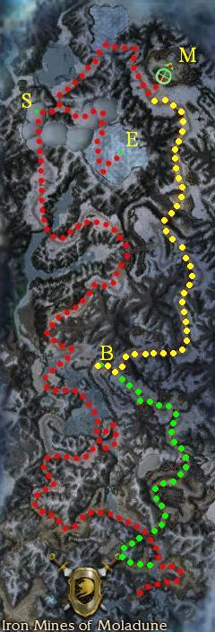

Elite: Cleave
M21
Iron Mines of Moladune
◉ Mission Map

Click to enlarge · Local cache · Wiki
Summary (click to expand)
Evennia is free, and the treacherous Markis isn't far. Seek out the Seer to find how to infuse your armor to protect against the Mursaat 's deadly Spectral Agony . Then track down Markis and avenge his treachery against the Shining Blade .
Region: Southern Shiverpeaks · Mission: 21 of 25 · Type: Cooperative
✓ Objectives
Kill Markis and his Jade Armor guards.
- Find the Seer.
- ADDED: Kill the Eidolon.
- ADDED: Deliver the Spectral Essence to the Seer to infuse your armor.
- *BONUS* Defeat The Inquisitor before he leaves with the information about the Shining Blade.
→ Walkthrough
The goal of this mission is to kill Markis at the point marked M on the map. To do so the players first have to meet with the Seer at the point marked S, who will offer to infuse players armor to protect them against Spectral Agony.
Maximum-stat armor (e.g. from Droknar's Forge) is strongly advised for this mission, not only because it gives an edge in the fights, but also because infusion will only be applied to the armor set players are currently wearing. As you encounter the Mursaat throughout the rest of the campaign, you want to make sure that you are protected against their most deadly attack. Should you miss the opportunity, you will need to repeat the first part of the mission or alternatively infuse another set later in the game in Mineral Springs, or the Ring of Fire or Abaddon's Mouth missions.
Do not engage the Mursaat in combat until your armor is infused, or use an infused tank, such as any hero or pet (henchmen are not infused), to draw attacks away from the rest of the team.
At the beginning, there's a battle between the Stone Summit and White Mantle. You can ignore them and simply run past them. Head along the frozen river and then keep heading north. Again you will sight a very large group of Stone Summit and White Mantle in combat, head east to avoid it since there is no need to fight them.
At this point you will hear Shining Blade Scout Ryder calling out for help but safe from harm. She gives the bonus objective but her rescue is not needed to complete the mission. In any case, ignore her for the time being.
Cross another bridge and keep traveling north-west until you reach the snowfields populated by Azure Shadows. Kill them and proceed to the Seer (marked S on the map above).
Approaching the Seer will trigger a cutscene where players are instructed to kill the Eidolon (at point E) and obtain its Spectral Essence to infuse your armor. The Eidolon is not difficult to defeat and once killed will drop the Spectral Essence as a bundle that you have to carry back to the Seer. Once done, talk to the Seer to have your armor infused with the essence.
Follow then the passage north of the Seer to reach Markis' location.
You can either immediately kill him and his Jade guards to complete the mission or ignore him for now and proceed south to do the bonus.
- Alternative route to Markis
Talking to the Seer is actually not necessary for finishing the mission. Should players be already infused against Spectral Agony, it is more time efficient to go through the Mursaat stronghold at the start of the mission instead.
In this case, do not follow the river north, but follow Markis through the Mursaat stronghold - this path is marked in green and yellow on the map above. This path has the benefit of going via the bonus NPC Shining Blade Scout Ryder.
★ Bonus

The Inquisitor's escape gate
Shining Blade Scout Ryder, found at point B on the map, urges players to kill The Inquisitor before it escapes with intelligence. Accepting the bonus will spawn the mentioned boss and a few Mursaat, which will move north towards the Mursaat teleporter.
To get to Ryder in the first place, head south of Markis and kill the Mursaat you encounter. Alternatively if you followed the green path above, kill the Mursaat up to the next bridge.
Clear out the surrounding mobs between Ryder and the bridge before talking to Ryder to avoid over-aggro. Send only one player to Ryder while the rest of the party awaits at the Inquisitor spawn point (which is just outside the gates, a little up the hill).
◆ Hard Mode
Although the foes are notably tougher in hard mode, the basic strategies are the same.
☠ Bosses & Elites
Elite: Dwarven Battle Stance
Elite: Mark of Protection
Elite: Mist Form
Elite: Barrage
Elite: Devastating Hammer
Elite: Oath Shot
Elite: Life Transfer
Elite: Energy Surge
Elite: Thunderclap
Elite: Thunderclap
Elite: Signet of Judgment
Elite: Spiteful Spirit
Elite: Illusionary Weaponry
✦ Tips & Notes
Skill recommendations
- Snares and knockdowns to prevent The Inquisitor from running away.
- Anti-caster skills for players without infused armor.
Notes
- Despite being mentioned in the mission objectives, it is not necessary to visit the Seer in order to finish the mission.
- Shining Blade Scout Ryder can die, preventing you from beginning the bonus.
- Henchmen are not infused at the beginning of mission and become infused only after delivering the Spectral Essence to the Seer.
- The popular "Infusion run" follows the red path on the map above to only trigger the Seer cinematic.
- Players wanting to capture Barrage from Markis need to kill him before finishing off the four Jade Armor guards or the mission will end.
- Completion of this mission will fill in page #14 in The Flameseeker Prophecies storybook.
- After completing this mission, your party will be taken to Thunderhead Keep.